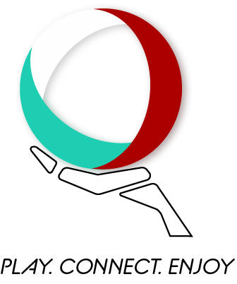
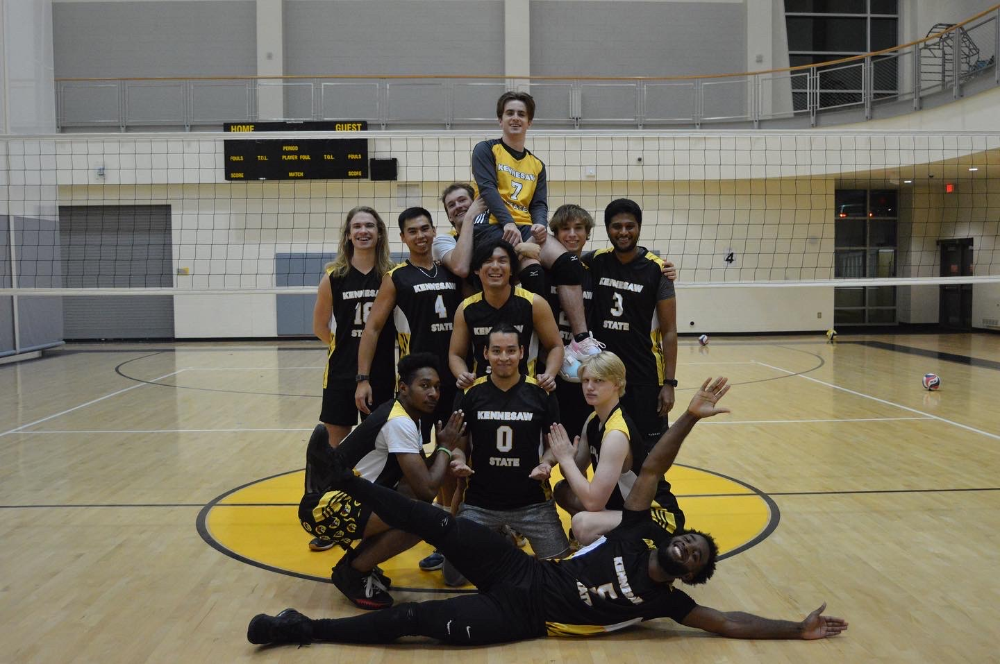

Who We Are?We are an Independent organization set out to help anyone who is interested in learning volleyball or returning to play.
Contact:
778-239-3290
The All Star Staff
Will Goldferg
Born in the U.S, he has played since middle school with 9 years of experience. Currentyl play for the KSU club team.
Rovid Chavez
Born in Cali, Colombia, one of the original founders. He has 5 years of experience. Played in College and is still active in the competitive scene.
David Mojana
Born in the U.S, he played tennis for a good portion of his life but then moveed over to Volleyball. The transcition was smooth. He has played for 6 years as an outside hitter. Currently still active in the competitive scene.
Ian Pineiro
Born in the U.S, he has played middle for his entire career. Coming from a family of Volleball players he has learned everything that the sport can offer. He is currently in the competitive scene.